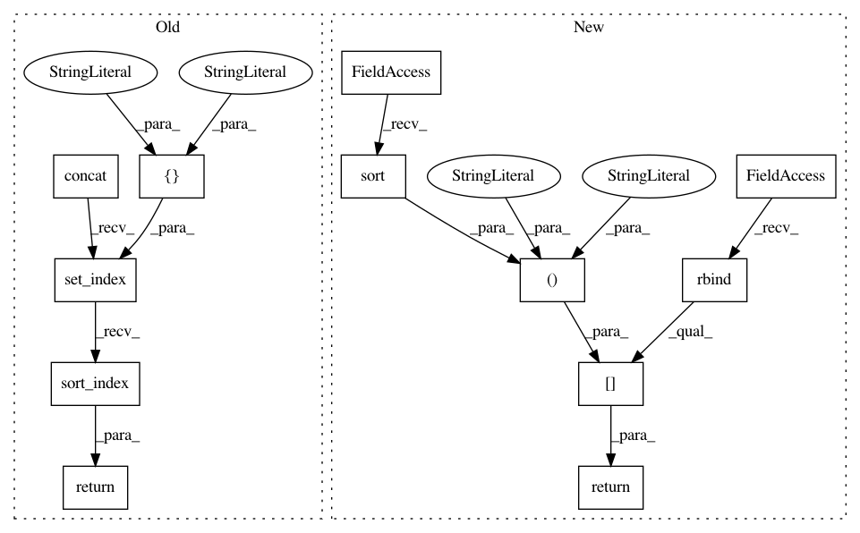

9def69a805132ff7549744b5b30a2fa7531fa405,tmtoolkit/preprocess/_tmpreproc.py,TMPreproc,tokens_dataframe,#TMPreproc#,128
Before Change
dfs.append(df)
if dfs:
res = pd.concat(dfs, ignore_index=True)
else:
res = pd.DataFrame({"doc": [], "position": [], "token": []})
return res.set_index(["doc", "position"]).sort_index()
@property
def tokens_with_pos_tags(self):
self._require_pos_tags()
After Change
dfs.append(dt.cbind(meta_df, df))
if dfs:
res = dt.rbind(*dfs)
else:
res = dt.Frame({"doc": [], "position": [], "token": []})
return res[:, :, dt.sort(dt.f.doc, dt.f.position)]
@property
def tokens_with_pos_tags(self):
self._require_pos_tags()
In pattern: SUPERPATTERN
Frequency: 3
Non-data size: 12
Instances
Project Name: WZBSocialScienceCenter/tmtoolkit
Commit Name: 9def69a805132ff7549744b5b30a2fa7531fa405
Time: 2019-06-12
Author: markus.konrad@wzb.eu
File Name: tmtoolkit/preprocess/_tmpreproc.py
Class Name: TMPreproc
Method Name: tokens_dataframe
Project Name: WZBSocialScienceCenter/tmtoolkit
Commit Name: 9def69a805132ff7549744b5b30a2fa7531fa405
Time: 2019-06-12
Author: markus.konrad@wzb.eu
File Name: tmtoolkit/preprocess/_tmpreproc.py
Class Name: TMPreproc
Method Name: get_kwic_table
Project Name: WZBSocialScienceCenter/tmtoolkit
Commit Name: 9def69a805132ff7549744b5b30a2fa7531fa405
Time: 2019-06-12
Author: markus.konrad@wzb.eu
File Name: tmtoolkit/preprocess/_tmpreproc.py
Class Name: TMPreproc
Method Name: get_kwic